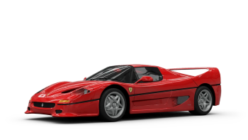

288 GTO
Motor
V8 a 90° F114B Biturbo de 2855 cm3
Velocitat máxima
305 km/h
Acceleració 0-100 km/h
4.9s
Més informació
Fitxa tècnica Ferrari 288 GTO
Dades generals
- Altres noms: Ferrari GTO
- Fabricant: Ferrari
- Dissenyador: Leonardo Fioravanti de Pininfarina i Nicola Materazzi
- Producció: 272 unitats
- Periode: 1984-1985
Configuració
- Tipus: Deportiu (S)
- Carrosseria: Berlinetta de 2 portes
- Configuració: Motor central posterior longitudinal, tracció posterior
Dimensions
- Longitud: 4,29m
- Amplada: 1,91m
- Altura: 1,12m
- Distancia entre eixos: 2,45m
- Via frontal: 1,55m
- Via posterior: 1.56m
- Pes: 1160 kg
Planta Matriu
- Motor: V8 a 90° F114B Biturbo de 2855 cm3
- Potencia: 400 CV
- Par motor: 496 N·m
Mecànica
- Frens: Discs ventilats 306 mm (Front.) 310 mm (Post.)
- Rodes: 225/50 (Front.) 265/50 (Post.) VR16 plg (40,6 cm)
- Direcció: Cremallera i pinyó
- Transmissió: Manual de 5 velocitats
- Suspensió: Independent de doble forquilla, molls helicoïdals sobre amortidors telescòpics i barra estabilitzadora
Prestacions
- Velocitat máxima: 305 km/h
- Acceleració (0-100 km/h): 4.9s
- Consum: 0.31
Seleccionar
F40
Motor
V8 DOHC biturbo de 90 graus de 2936 cc
Velocitat máxima
324 km/h
Acceleració 0-100 km/h
3.5s
Més informació
Fitxa tècnica Ferrari F40
Dades generals
- Fabricant: Ferrari
- Dissenyador: Pininfarina
- Fàbriques: Italia, Maranello
- Producció: 1311 unitats
- Periode: 1987-1992
Configuració
- Tipus: Superdeportiu (S)
- Carrosseria: Berlinetta de 2 portes
- Configuració: Motor central posterior longitudinal, tracció posterior
Dimensions
- Longitud: 4,43m
- Amplada: 1,98m
- Altura: 1,13m
- Distancia entre eixos: 2,45m
- Via frontal: 1,59m
- Via posterior: 1.61m
- Pes: 1100 kg
Planta Matriu
- Motor: V8 a 90° tipus F120 a Biturbo de 2936 cm3
- Potencia: 478 CV
- Par motor: 577 N·m
Mecànica
- Frens: Discs ventilats a les 4 ruedas
- Rodes: 245/40 ZR17 plg (43,2 cm) (Front.) 335/35 ZR17 plg (43,2 cm) (Post.)
- Direcció: Cremallera i pinyó
- Transmissió: Manual de 5 velocitats
- Suspensió: De doble forquilla, molls helicoïdals, amortidors hidràulics Koni i barra estabilitzadora
Prestacions
- Velocitat máxima: 324 km/h
- Acceleració (0-100 km/h): 4.1s
- Consum: 18,1 L/100 km (5,5 km/L; 13,0 mpgAm) (combinat) | 21,4 L/100 km (4,7 km/L; 11,0 mpgAm) (urbá) | 14,7 L/100 km (6,8 km/L; 16,0 mpgAm) (Carretera)
- Cx: 0.34
Seleccionar

F50
Motor
V8 a 90° F114B Biturbo de 2855 cm3
Velocitat máxima
355 km/h
Acceleració 0-100 km/h
3.14s
Més informació
Fitxa tècnica Ferrari F50
Dades generals
- Fabricant: Ferrari
- Dissenyador: Lorenzo Ramaciotti i Pietro Camardella de Pininfarina
- Fàbriques: Italia, Maranello
- Producció: 349 unitats
- Periode: 1995-1997
Configuració
- Tipus: Superdeportiu (S)
- Carrosseria: Berlinetta o Targa, de 2 portes
- Configuració: Motor central posterior longitudinal, tracció posterior
Dimensions
- Longitud: 4,48m
- Amplada: 1,98m
- Altura: 1,12m
- Distancia entre eixos: 2,58m
- Via frontal: 1,62m
- Via posterior: 1.60m
- Pes: 1230-1350 kg
Planta Matriu
- Motor: V12 a 65° Tipus F130B de 4698 cm3
- Potencia: 520 CV
- Par motor: 48 kg·m
Mecànica
- Frens: Discs ventilats Brembo de 4 pistons
- Rodes: Eagle F1 GS Fiorano 245/35 ZR 18 x 8,5 plg (45,7 x 21,6 cm) (Front.) 335/30 ZR 18 x 13 plg (45,7 x 33,0 cm) (Post.) en reines d'aliatge de magnesi Speedline
- Direcció: Cremallera i pinyó
- Transmissió: Manual de 6 velocitats
- Suspensió:Independent, tipus push-rod, braços oscil·lants de longitud desigual i molls helicoïdals Bilstein amb amortidors telescòpics de gas
Prestacions
- Velocitat máxima: 325 km/h
- Acceleració (0-100 km/h): 3.87s
- Consum: 29,4 L/100 km (3,4 km/L; 8 mpgAm) (Ciutat) | 21,4 L/100 km (4,7 km/L; 11,0 mpgAm) (Carretera) | 26,1 L/100 km (3,8 km/L; 9 mpgAm) (combinat)
- Cx: 0.372
Seleccionar
Enzo
Motor
V12 a 65° Tipo F140B de 5999 cm3
Velocitat máxima
305 km/h
Acceleració 0-100 km/h
4.9s
Més informació
Fitxa tècnica Ferrari Enzo
Dades generals
- Fabricant: Ferrari
- Dissenyador: Lorenzo Ramaciotti i Pietro Camardella de Pininfarina
- Fàbriques: Italia, Maranello
- Producció: 349 unitats
- Periode: 1995-1997
Configuració
- Tipus: Superdeportiu (S)
- Carrosseria: Berlinetta de 2 portes dièdriques
- Configuració: Motor central posterior longitudinal, tracció posterior
Dimensions
- Longitud: 4,70m
- Amplada: 2,03m
- Altura: 1,14m
- Distancia entre eixos: 2,65m
- Via frontal: 1,66m
- Via posterior: 1.65m
- Pes: 1255 kg
Planta Matriu
- Motor: V12 a 65° Tipus F140B de 5999 cm3
- Potencia: 660 CV
- Par motor: 67 kg·m
Mecànica
- Frens: Discs ventilats carboni-ceràmics Brembo amb ABS de 14,9 plg (378 mm)
- Rodes: Potenza RE050A Scuderia 245/35 ZR 19 x 9 plg (48,3 x 22,9 cm) (Front.) 345/35 ZR 19 x 13 plg (48,3 x 33,0 cm) (Post.)
- Direcció: Cremallera i pinyó
- Transmissió: Manual automatitzada Graziano F1 de 6 velocitats
- Suspensió:Independent amb vareta d'empenta, doble forquilla de llarg desigual, molls helicoïdals i amortidors telescòpics amb control electrònic adaptatiu
Prestacions
- Velocitat máxima: 355 km/h
- Acceleració (0-100 km/h): 3.14s
- Consum: 29,4 L/100 km (3,4 km/L; 8 mpgAm) (Ciutat) | 19,6 L/100 km (5,1 km/L; 12,0 mpgAm) (Carretera) | 26,1 L/100 km (3,8 km/L; 9 mpgAm) (Combinat)
- Cx: 0.372
Seleccionar